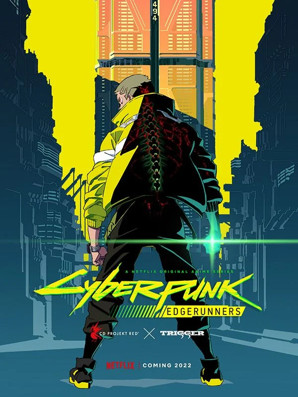

Cyberpunk anime are stories set in high-tech, low-life dystopian futures, featuring a blend of advanced technology and societal collapse. The most well-known example is Cyberpunk: Edgerunners, a 2022 Netflix series by Studio Trigger set in the Cyberpunk 2077 universe. It follows a street kid named David who becomes a mercenary outlaw, known as an "edgerunner" or "cyberpunk", navigating a corrupt, violent city obsessed with cybernetic body modification. The anime is known for its hyperviolence, distinctive visual style, fast-paced narrative, and exploration of themes like the dangers of technological obsession, cyber-psychosis, and the struggle for survival. [1, 2, 3, 4, 5, 6]
Key aspects of Cyberpunk anime:
• Setting: Dystopian cities characterized by neon lights, corporate control, advanced technology like cybernetic implants, and significant social stratification. [2, 5]
• Themes: The narrative often explores the dark side of technology, including the loss of humanity through excessive body modification, the consequences of cybernetic addiction, and the struggle of marginalized individuals within a corrupt system. [1, 5, 6]
• Protagonists: Typically outsiders, rebels, or mercenaries who exist on the fringes of society. [4, 5, 7, 8]
• Visuals: A distinct aesthetic with fluorescent colors, gritty cityscapes, and intense, often bloody action. [4, 9]
Cyberpunk: Edgerunners details:
• Plot: A standalone story focusing on David Martinez, a young, impulsive street kid who, after a tragic event, decides to survive by becoming a cyberpunk. [4, 5]
• Setting: Night City, a city known for corruption, gang violence, and megacorporations like Arasaka and Militech. [5]
• Studio & Collaboration: A collaboration between Studio Trigger and CD Projekt Red, the creators of the Cyberpunk 2077 video game. [4, 10]
• Themes: The show serves as a cautionary tale, examining how the pursuit of upgrades can lead to obsession, mental breakdown (cyber-psychosis), and the loss of one's identity. [4, 6]
• Production: High production quality with a notable soundtrack and character-driven story that is accessible even to those unfamiliar with the game. [4, 9]
• Rating: The series is rated TV-MA due to its strong graphic violence, gore, and mature thematic material. [11, 12]
AI responses may include mistakes.
[1]click for watch web 1
[2] click for watch web 1
[3]click for watch web 1
[4]click for watch web 1
[5]click for watch web 1
[6] click for watch web 1
[7] click for watch web 1
[8] click for watch web 1
[9]click for watch web 1
[10] click for watch web 1
[11]click for watch web 1
[12]click for watch web 1